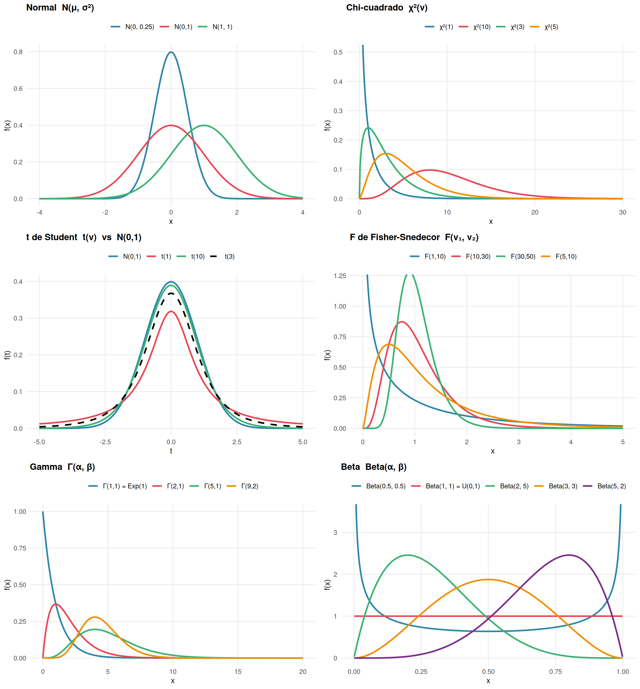

# ── Paleta ──────────────────────────────────────────────────────────────────
pal <- c("#2E86AB", "#E84855", "#3BB273", "#F18F01",
"#7B2D8B", "#C75146", "#5C6BC0")
# ── 1. Normal ────────────────────────────────────────────────────────────────
x_n <- seq(-4, 4, length.out = 400)
df_norm <- bind_rows(
data.frame(x = x_n, y = dnorm(x_n, 0, 1), grupo = "N(0,1)"),
data.frame(x = x_n, y = dnorm(x_n, 0, 0.5), grupo = "N(0, 0.25)"),
data.frame(x = x_n, y = dnorm(x_n, 1, 1), grupo = "N(1, 1)")
)
p1 <- ggplot(df_norm, aes(x, y, colour = grupo)) +
geom_line(linewidth = 1.1) +
scale_colour_manual(values = pal[1:3], name = NULL) +
labs(title = "Normal N(μ, σ²)", x = "x", y = "f(x)") +
theme(legend.position = "top")
# ── 2. Chi-cuadrado ──────────────────────────────────────────────────────────
x_c <- seq(0, 30, length.out = 400)
df_chi <- bind_rows(
data.frame(x = x_c, y = dchisq(x_c, 1), grupo = "χ²(1)"),
data.frame(x = x_c, y = dchisq(x_c, 3), grupo = "χ²(3)"),
data.frame(x = x_c, y = dchisq(x_c, 5), grupo = "χ²(5)"),
data.frame(x = x_c, y = dchisq(x_c, 10), grupo = "χ²(10)")
)
p2 <- ggplot(df_chi, aes(x, y, colour = grupo)) +
geom_line(linewidth = 1.1) +
scale_colour_manual(values = pal[1:4], name = NULL) +
coord_cartesian(ylim = c(0, 0.5)) +
labs(title = "Chi-cuadrado χ²(ν)", x = "x", y = "f(x)") +
theme(legend.position = "top")
# ── 3. t de Student ──────────────────────────────────────────────────────────
x_t <- seq(-5, 5, length.out = 400)
df_t <- bind_rows(
data.frame(x = x_t, y = dt(x_t, 1), grupo = "t(1)"),
data.frame(x = x_t, y = dt(x_t, 3), grupo = "t(3)"),
data.frame(x = x_t, y = dt(x_t, 10), grupo = "t(10)"),
data.frame(x = x_t, y = dnorm(x_t), grupo = "N(0,1)")
)
p3 <- ggplot(df_t, aes(x, y, colour = grupo, linetype = grupo)) +
geom_line(linewidth = 1.1) +
scale_colour_manual(values = c(pal[1:3], "black"), name = NULL) +
scale_linetype_manual(values = c("solid","solid","solid","dashed"), name = NULL) +
labs(title = "t de Student t(ν) vs N(0,1)", x = "t", y = "f(t)") +
theme(legend.position = "top")
# ── 4. F de Fisher ───────────────────────────────────────────────────────────
x_f <- seq(0.001, 5, length.out = 500)
df_f <- bind_rows(
data.frame(x = x_f, y = df(x_f, 1, 10), grupo = "F(1,10)"),
data.frame(x = x_f, y = df(x_f, 5, 10), grupo = "F(5,10)"),
data.frame(x = x_f, y = df(x_f, 10, 30), grupo = "F(10,30)"),
data.frame(x = x_f, y = df(x_f, 30, 50), grupo = "F(30,50)")
)
p4 <- ggplot(df_f, aes(x, y, colour = grupo)) +
geom_line(linewidth = 1.1) +
scale_colour_manual(values = pal[1:4], name = NULL) +
coord_cartesian(ylim = c(0, 1.2)) +
labs(title = "F de Fisher-Snedecor F(ν₁, ν₂)", x = "x", y = "f(x)") +
theme(legend.position = "top")
# ── 5. Gamma ─────────────────────────────────────────────────────────────────
x_g <- seq(0, 20, length.out = 400)
df_gam <- bind_rows(
data.frame(x = x_g, y = dgamma(x_g, shape = 1, rate = 1), grupo = "Γ(1,1) = Exp(1)"),
data.frame(x = x_g, y = dgamma(x_g, shape = 2, rate = 1), grupo = "Γ(2,1)"),
data.frame(x = x_g, y = dgamma(x_g, shape = 5, rate = 1), grupo = "Γ(5,1)"),
data.frame(x = x_g, y = dgamma(x_g, shape = 9, rate = 2), grupo = "Γ(9,2)")
)
p5 <- ggplot(df_gam, aes(x, y, colour = grupo)) +
geom_line(linewidth = 1.1) +
scale_colour_manual(values = pal[1:4], name = NULL) +
labs(title = "Gamma Γ(α, β)", x = "x", y = "f(x)") +
theme(legend.position = "top")
# ── 6. Beta ──────────────────────────────────────────────────────────────────
x_b <- seq(0.001, 0.999, length.out = 400)
df_beta <- bind_rows(
data.frame(x = x_b, y = dbeta(x_b, 0.5, 0.5), grupo = "Beta(0.5, 0.5)"),
data.frame(x = x_b, y = dbeta(x_b, 1, 1 ), grupo = "Beta(1, 1) = U(0,1)"),
data.frame(x = x_b, y = dbeta(x_b, 2, 5 ), grupo = "Beta(2, 5)"),
data.frame(x = x_b, y = dbeta(x_b, 5, 2 ), grupo = "Beta(5, 2)"),
data.frame(x = x_b, y = dbeta(x_b, 3, 3 ), grupo = "Beta(3, 3)")
)
p6 <- ggplot(df_beta, aes(x, y, colour = grupo)) +
geom_line(linewidth = 1.1) +
scale_colour_manual(values = pal[1:5], name = NULL) +
coord_cartesian(ylim = c(0, 3.5)) +
labs(title = "Beta Beta(α, β)", x = "x", y = "f(x)") +
theme(legend.position = "top")
# ── Layout ───────────────────────────────────────────────────────────────────
grid.arrange(p1, p2, p3, p4, p5, p6, ncol = 2)